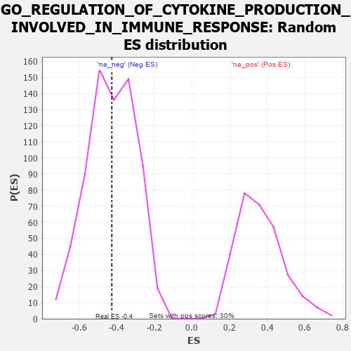

| | | Dataset | 7d |
| Phenotype | NoPhenotypeAvailable |
| Upregulated in class | na_neg |
| GeneSet | GO_REGULATION_OF_CYTOKINE_PRODUCTION_INVOLVED_IN_IMMUNE_RESPONSE |
| Enrichment Score (ES) | -0.4258155 |
| Normalized Enrichment Score (NES) | -0.9953629 |
| Nominal p-value | 0.5035663 |
| FDR q-value | 0.8773168 |
| FWER p-Value | 1.0 |
Table: GSEA Results Summary
 Fig 1: Enrichment plot: GO_REGULATION_OF_CYTOKINE_PRODUCTION_INVOLVED_IN_IMMUNE_RESPONSE
Fig 1: Enrichment plot: GO_REGULATION_OF_CYTOKINE_PRODUCTION_INVOLVED_IN_IMMUNE_RESPONSE
Profile of the Running ES Score & Positions of GeneSet Members on the Rank Ordered List
| PROBE | GENE SYMBOL | GENE_TITLE | RANK IN GENE LIST | RANK METRIC SCORE | RUNNING ES | CORE ENRICHMENT | | 1 | TGFB3 | | | 49 | 2.654 | 0.2366 | No |
| 2 | MIF | | | 2357 | 0.252 | -0.0303 | No |
| 3 | DDX1 | | | 2718 | 0.196 | -0.0576 | No |
| 4 | BTK | | | 2958 | 0.156 | -0.0733 | No |
| 5 | SMAD7 | | | 3369 | 0.093 | -0.1163 | No |
| 6 | TRIL | | | 3428 | 0.087 | -0.1157 | No |
| 7 | DDX58 | | | 3998 | -0.007 | -0.1865 | No |
| 8 | GATA3 | | | 4614 | -0.120 | -0.2528 | No |
| 9 | DDX21 | | | 5231 | -0.252 | -0.3071 | No |
| 10 | FZD5 | | | 5386 | -0.292 | -0.2998 | No |
| 11 | TRPM4 | | | 6390 | -0.612 | -0.3699 | Yes |
| 12 | MALT1 | | | 6432 | -0.634 | -0.3171 | Yes |
| 13 | CCR2 | | | 7003 | -0.939 | -0.3028 | Yes |
| 14 | TRAF6 | | | 7818 | -2.157 | -0.2079 | Yes |
| 15 | TRAF2 | | | 7861 | -2.481 | 0.0138 | Yes |
Table: GSEA details [plain text format]

Fig 2: GO_REGULATION_OF_CYTOKINE_PRODUCTION_INVOLVED_IN_IMMUNE_RESPONSE: Random ES distribution
Gene set null distribution of ES for GO_REGULATION_OF_CYTOKINE_PRODUCTION_INVOLVED_IN_IMMUNE_RESPONSE